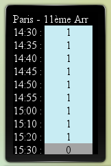

Presentation
Voici un widget dont je me sers pour afficher la pluie à une heure. Je l'utilise principalement dans KDE Plasma, en tant que plasmoid avec "Tranche de Web".
Aperçu

Dependances
Il n'y a pas de dépendance particulière.
Par contre, étant donné qu'il s'appuie sur le site web mobile de Meteo France, il est évident qu'en cas de changement du site, le widget sera probablement cassé.
Utilisation
Vous devez avoir un serveur web gérant PHP 5.
Dans pluie.php, configurer l'adresse du fichier JSON en mettant le code INSEE de votre zone, ou en allant sur le site mobile de Meteo France http://www.meteo-france.mobi/home
Et voilà !